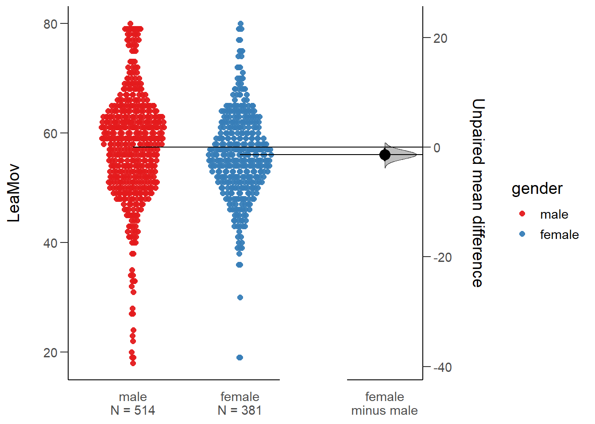

1.基本概念的描述
1.1为什么做数据分析
了解我们要研究的对象的基本情况，探讨变量间的相互关系
抽样分析。如果能够获得总体的数据，那么“数据即是理论”，而不需要进行推断统计
由“科学”到“广义科学”：从寻求确定的结果到寻求稳定区间内的结果
1.2总体与样本
总体(population)：全体CSNU的学生
样本(sample)：CSNU心理学专业学生
总体参数：CSNU平均学习时间
样本统计量：CSNU心理学专业学生的平均学习时间
样本统计量 ≠ 总体参数
因此，从样本推论总体情况的时候，总是存在（不准确的情况）误差
置信区间(confidence interval)：有多大的概率我们估计的数据会落入这一区间内
1.3数据类型
- 定性数据
- 称名数据：性别，专业等
- 顺序数据：学历
- 定量数据
- 离散数据：学生人数（只能计为个数，不存在小数）
- 连续数据：体重，年龄等
1.4显著性水平与统计功效
显著性水平:犯第一类错误的最大概率的大小α。
p值：当H0是对的时，然后给定某个数，跟这个数一样极端或者比它还极端的概率就是P-value。
统计功效：统计功效指的是在假设检验中,H1(alternative hypothesis)为真时,正确地拒绝H0(null hypothesis)的概率,或者1-β。
一类错误与二类错误：

1.4显著性水平与统计功效
- 举例：在未来，女性已经统治了地球，他们觉的男人太过讨厌，于是想了一个办法来清除男性，他们商讨一番，决定使用的新鲜武器：自动判别，如果小于A罩杯，则杀无赦；如果等于或大于A罩杯，则放过。这个武器本意是区分男性和女性，杀死所有男性，放过所有女性。硝烟过后，大家可以想象得到结果，有些可怜的mm因为胸太小被误杀，这就是武器的判别程序犯的一类错误。本属于女性这个群体，却被错误的判断为不属于。有些胸肌发达的gg因为胸很大而活下来，这就是武器的判别程序犯的二类错误，本不属于女性这个群体，却被误判为属于。而所有被杀害的男性，则是该判别程序的效力（power，i.e. 1-β）。
1.5信度与效度
- 信度：问卷或测量工具的稳定性指标，说明可重复性的可能
效度：针对某一变量的问卷或测量工具有效性程度。
效度高，信度一定高；信度高，效度不一定高。
2.描述性统计
2.1 被试群体的基本信息
- 举例：大学生社会流动信念是如何影响学习投入的?
- 被试性别分布
- 被试性别与年级分布
2.2研究工具的信、效度
- 信度分析
##
## 载入程辑包：'psych'## The following objects are masked from 'package:ggplot2':
##
## %+%, alpha## [1] 0.8586419## [1] 0.8925558## [1] 0.9360799## [1] 0.9561618- 效度分析:以社会阶层流动信念问卷为例
## This is lavaan 0.6-3## lavaan is BETA software! Please report any bugs.##
## 载入程辑包：'lavaan'## The following object is masked from 'package:psych':
##
## cor2cov## lavaan 0.6-3 ended normally after 22 iterations
##
## Optimization method NLMINB
## Number of free parameters 12
##
## Number of observations 895
##
## Estimator ML
## Model Fit Test Statistic 287.879
## Degrees of freedom 9
## P-value (Chi-square) 0.000
##
## Model test baseline model:
##
## Minimum Function Test Statistic 2454.614
## Degrees of freedom 15
## P-value 0.000
##
## User model versus baseline model:
##
## Comparative Fit Index (CFI) 0.886
## Tucker-Lewis Index (TLI) 0.809
##
## Loglikelihood and Information Criteria:
##
## Loglikelihood user model (H0) -7682.579
## Loglikelihood unrestricted model (H1) -7538.639
##
## Number of free parameters 12
## Akaike (AIC) 15389.157
## Bayesian (BIC) 15446.719
## Sample-size adjusted Bayesian (BIC) 15408.609
##
## Root Mean Square Error of Approximation:
##
## RMSEA 0.186
## 90 Percent Confidence Interval 0.168 0.205
## P-value RMSEA <= 0.05 0.000
##
## Standardized Root Mean Square Residual:
##
## SRMR 0.068
##
## Parameter Estimates:
##
## Information Expected
## Information saturated (h1) model Structured
## Standard Errors Standard
##
## Latent Variables:
## Estimate Std.Err z-value P(>|z|) Std.lv Std.all
## G =~
## a1 1.000 0.836 0.691
## a2 1.116 0.056 19.897 0.000 0.933 0.746
## a3 0.957 0.061 15.663 0.000 0.800 0.575
## a4 1.174 0.054 21.799 0.000 0.982 0.834
## a5 0.855 0.050 17.177 0.000 0.715 0.634
## a6 1.210 0.058 20.805 0.000 1.012 0.786
##
## Variances:
## Estimate Std.Err z-value P(>|z|) Std.lv Std.all
## .a1 0.764 0.041 18.424 0.000 0.764 0.522
## .a2 0.694 0.040 17.379 0.000 0.694 0.444
## .a3 1.298 0.066 19.698 0.000 1.298 0.670
## .a4 0.421 0.030 14.231 0.000 0.421 0.304
## .a5 0.760 0.040 19.157 0.000 0.760 0.598
## .a6 0.634 0.039 16.258 0.000 0.634 0.382
## G 0.699 0.062 11.201 0.000 1.000 1.000
##
## R-Square:
## Estimate
## a1 0.478
## a2 0.556
## a3 0.330
## a4 0.696
## a5 0.402
## a6 0.618- 效度分析:以学习投入量表为例
## lavaan 0.6-3 ended normally after 51 iterations
##
## Optimization method NLMINB
## Number of free parameters 37
##
## Number of observations 895
##
## Estimator ML
## Model Fit Test Statistic 1731.394
## Degrees of freedom 116
## P-value (Chi-square) 0.000
##
## Model test baseline model:
##
## Minimum Function Test Statistic 12656.568
## Degrees of freedom 136
## P-value 0.000
##
## User model versus baseline model:
##
## Comparative Fit Index (CFI) 0.871
## Tucker-Lewis Index (TLI) 0.849
##
## Loglikelihood and Information Criteria:
##
## Loglikelihood user model (H0) -20293.204
## Loglikelihood unrestricted model (H1) -19427.507
##
## Number of free parameters 37
## Akaike (AIC) 40660.409
## Bayesian (BIC) 40837.891
## Sample-size adjusted Bayesian (BIC) 40720.386
##
## Root Mean Square Error of Approximation:
##
## RMSEA 0.125
## 90 Percent Confidence Interval 0.120 0.130
## P-value RMSEA <= 0.05 0.000
##
## Standardized Root Mean Square Residual:
##
## SRMR 0.061
##
## Parameter Estimates:
##
## Information Expected
## Information saturated (h1) model Structured
## Standard Errors Standard
##
## Latent Variables:
## Estimate Std.Err z-value P(>|z|) Std.lv Std.all
## f1 =~
## d1 1.000 0.882 0.603
## d2 1.018 0.059 17.229 0.000 0.899 0.681
## d3 1.133 0.062 18.401 0.000 1.000 0.746
## d5 0.974 0.053 18.372 0.000 0.859 0.745
## d7 1.297 0.062 20.757 0.000 1.144 0.895
## d9 1.216 0.063 19.290 0.000 1.073 0.799
## f2 =~
## d4 1.000 0.958 0.759
## d8 1.141 0.039 29.462 0.000 1.094 0.884
## d10 1.180 0.041 29.023 0.000 1.131 0.873
## d12 1.034 0.044 23.439 0.000 0.991 0.731
## d15 0.976 0.041 24.060 0.000 0.935 0.748
## d17 0.970 0.056 17.177 0.000 0.930 0.554
## f3 =~
## d6 1.000 0.954 0.781
## d11 1.190 0.039 30.652 0.000 1.135 0.873
## d13 1.021 0.042 24.506 0.000 0.974 0.735
## d14 0.725 0.038 19.315 0.000 0.691 0.602
## d16 0.952 0.048 19.782 0.000 0.908 0.615
##
## Covariances:
## Estimate Std.Err z-value P(>|z|) Std.lv Std.all
## f1 ~~
## f2 0.854 0.061 14.033 0.000 1.011 1.011
## f2 ~~
## f3 0.948 0.058 16.446 0.000 1.038 1.038
## f1 ~~
## f3 0.847 0.060 14.181 0.000 1.007 1.007
##
## Variances:
## Estimate Std.Err z-value P(>|z|) Std.lv Std.all
## .d1 1.366 0.066 20.717 0.000 1.366 0.637
## .d2 0.933 0.046 20.475 0.000 0.933 0.536
## .d3 0.795 0.039 20.140 0.000 0.795 0.443
## .d5 0.593 0.029 20.152 0.000 0.593 0.445
## .d7 0.324 0.019 17.207 0.000 0.324 0.198
## .d9 0.651 0.033 19.675 0.000 0.651 0.361
## .d4 0.677 0.033 20.655 0.000 0.677 0.425
## .d8 0.335 0.017 19.236 0.000 0.335 0.219
## .d10 0.398 0.020 19.509 0.000 0.398 0.237
## .d12 0.855 0.041 20.750 0.000 0.855 0.465
## .d15 0.690 0.033 20.696 0.000 0.690 0.441
## .d17 1.951 0.093 21.023 0.000 1.951 0.693
## .d6 0.581 0.028 20.460 0.000 0.581 0.390
## .d11 0.404 0.022 18.656 0.000 0.404 0.239
## .d13 0.807 0.039 20.753 0.000 0.807 0.460
## .d14 0.840 0.040 21.057 0.000 0.840 0.638
## .d16 1.358 0.065 21.043 0.000 1.358 0.622
## f1 0.779 0.079 9.821 0.000 1.000 1.000
## f2 0.918 0.069 13.372 0.000 1.000 1.000
## f3 0.910 0.065 13.930 0.000 1.000 1.000
##
## R-Square:
## Estimate
## d1 0.363
## d2 0.464
## d3 0.557
## d5 0.555
## d7 0.802
## d9 0.639
## d4 0.575
## d8 0.781
## d10 0.763
## d12 0.535
## d15 0.559
## d17 0.307
## d6 0.610
## d11 0.761
## d13 0.540
## d14 0.362
## d16 0.3782.3 描述统计
- 平均数M:用于描述群体基本状况的数据
- 标准差SD：用于描述群体数据离散程度的数据，标准差越大，群体数据越分散。
## vars n mean sd median trimmed mad min max range skew
## SocMob 1 895 24.42 5.69 25 24.63 4.45 6 36 30 -0.50
## LeaMov 2 895 56.81 9.45 57 56.95 8.90 18 80 62 -0.47
## PsyCap 3 895 77.57 13.60 77 77.84 11.86 15 105 90 -0.70
## LeaEng 4 895 83.76 17.15 84 83.87 16.31 17 119 102 -0.30
## kurtosis se
## SocMob 0.86 0.19
## LeaMov 1.92 0.32
## PsyCap 2.64 0.45
## LeaEng 0.90 0.57- 相关系数r: 用于描述两个变量之间的关系
2.4推断统计
- t检验:用于描述变量在两个水平上差异的检验方法。
- 社会流动信念t检验
## 载入需要的程辑包：boot##
## 载入程辑包：'boot'## The following object is masked from 'package:psych':
##
## logit## 载入需要的程辑包：magrittr## DABEST (Data Analysis with Bootstrap Estimation) v0.2.2
## =======================================================
##
## Variable: SocMob
##
## Unpaired mean difference of female (n=514) minus male (n=381)
## -0.0917 [95CI -0.838; 0.602]
##
##
## 5000 bootstrap resamples.
## All confidence intervals are bias-corrected and accelerated.- 学习动机t检验
## DABEST (Data Analysis with Bootstrap Estimation) v0.2.2
## =======================================================
##
## Variable: LeaMov
##
## Unpaired mean difference of female (n=514) minus male (n=381)
## -1.35 [95CI -2.55; -0.142]
##
##
## 5000 bootstrap resamples.
## All confidence intervals are bias-corrected and accelerated.
- ANOVA检验:在描述性统计部分，主要了解单因素方差分析
3.中介作用
3.1概念模型
##
## 载入程辑包：'processR'## The following object is masked from 'package:psych':
##
## corPlot3.2统计模型
3.3中介模型的实现
## LeaMov~a*SocMob
## LeaEng~c*SocMob+b*LeaMov
## indirect :=(a)*(b)
## direct :=c
## total := direct + indirect
## prop.mediated := indirect / total## lavaan 0.6-3 ended normally after 19 iterations
##
## Optimization method NLMINB
## Number of free parameters 5
##
## Number of observations 895
##
## Estimator ML
## Model Fit Test Statistic 0.000
## Degrees of freedom 0
## Minimum Function Value 0.0000000000000
##
## Parameter Estimates:
##
## Information Expected
## Information saturated (h1) model Structured
## Standard Errors Standard
##
## Regressions:
## Estimate Std.Err z-value P(>|z|)
## LeaMov ~
## SocMob (a) 0.752 0.049 15.199 0.000
## LeaEng ~
## SocMob (c) 0.950 0.092 10.379 0.000
## LeaMov (b) 0.673 0.055 12.213 0.000
##
## Variances:
## Estimate Std.Err z-value P(>|z|)
## .LeaMov 70.906 3.352 21.154 0.000
## .LeaEng 192.941 9.121 21.154 0.000
##
## Defined Parameters:
## Estimate Std.Err z-value P(>|z|)
## indirect 0.506 0.053 9.520 0.000
## direct 0.950 0.092 10.379 0.000
## total 1.456 0.088 16.523 0.000
## prop.mediated 0.348 0.038 9.251 0.0004.调节作用
4.1概念模型
4.2统计模型
4.3调节模型的实现
## LeaEng~c1*SocMob+c2*PsyCap+c3*SocMob:PsyCap
## PsyCap ~ PsyCap.mean*1
## PsyCap ~~ PsyCap.var*PsyCap
## direct :=c1+c3*PsyCap.mean
## direct.below:=c1+c3*(PsyCap.mean-sqrt(PsyCap.var))
## direct.above:=c1+c3*(PsyCap.mean+sqrt(PsyCap.var))## lavaan 0.6-3 ended normally after 52 iterations
##
## Optimization method NLMINB
## Number of free parameters 12
##
## Number of observations 895
##
## Estimator GLS
## Model Fit Test Statistic 412.550
## Degrees of freedom 2
## P-value (Chi-square) 0.000
##
## Parameter Estimates:
##
## Information Expected
## Information saturated (h1) model Structured
## Standard Errors Standard
##
## Regressions:
## Estimate Std.Err z-value P(>|z|)
## LeaEng ~
## SocMob (c1) 0.181 1.131 0.160 0.873
## PsyCap (c2) 0.655 0.389 1.684 0.092
## ScMb:PsyC (c3) 0.004 0.016 0.283 0.777
##
## Covariances:
## Estimate Std.Err z-value P(>|z|)
## SocMob ~~
## SocMob:PsyCap 1739.963 92.476 18.815 0.000
##
## Intercepts:
## Estimate Std.Err z-value P(>|z|)
## PsyCap (PsC.) 77.568 0.455 170.565 0.000
## .LeaEng 19.919 32.871 0.606 0.545
## SocMob 24.420 0.190 128.252 0.000
## ScMb:PC 1934.194 22.091 87.557 0.000
##
## Variances:
## Estimate Std.Err z-value P(>|z|)
## PsyCap (PsC.) 14.249 2.428 5.869 0.000
## .LeaEng 148.595 7.028 21.142 0.000
## SocMob 23.077 1.129 20.443 0.000
## ScMb:PC 139721.037 8427.093 16.580 0.000
##
## Defined Parameters:
## Estimate Std.Err z-value P(>|z|)
## direct 0.525 0.122 4.319 0.000
## direct.below 0.509 0.090 5.632 0.000
## direct.above 0.542 0.169 3.216 0.0015.有调节的中介
5.1概念模型
5.2统计模型
5.3有调节的中介作用模型实现
## LeaMov~a1*SocMob+a2*PsyCap+a3*SocMob:PsyCap
## LeaEng~c1*SocMob+c2*PsyCap+c3*SocMob:PsyCap+b1*LeaMov+b2*LeaMov:PsyCap
## PsyCap ~ PsyCap.mean*1
## PsyCap ~~ PsyCap.var*PsyCap
## CE.XonM :=a1+a3*PsyCap.mean
## CE.MonY :=b1+b2*PsyCap.mean
## indirect :=(a1+a3*PsyCap.mean)*(b1+b2*PsyCap.mean)
## direct :=c1+c3*PsyCap.mean
## total := direct + indirect
## prop.mediated := indirect / total
## CE.XonM.below :=a1+a3*(PsyCap.mean-sqrt(PsyCap.var))
## CE.MonY.below :=b1+b2*(PsyCap.mean-sqrt(PsyCap.var))
## indirect.below :=(a1+a3*(PsyCap.mean-sqrt(PsyCap.var)))*(b1+b2*(PsyCap.mean-sqrt(PsyCap.var)))
## CE.XonM.above :=a1+a3*(PsyCap.mean+sqrt(PsyCap.var))
## CE.MonY.above :=b1+b2*(PsyCap.mean+sqrt(PsyCap.var))
## indirect.above :=(a1+a3*(PsyCap.mean+sqrt(PsyCap.var)))*(b1+b2*(PsyCap.mean+sqrt(PsyCap.var)))
## direct.below:=c1+c3*(PsyCap.mean-sqrt(PsyCap.var))
## direct.above:=c1+c3*(PsyCap.mean+sqrt(PsyCap.var))
## total.below := direct.below + indirect.below
## total.above := direct.above + indirect.above
## prop.mediated.below := indirect.below / total.below
## prop.mediated.above := indirect.above / total.above## Warning in lav_data_full(data = data, group = group, cluster = cluster, :
## lavaan WARNING: some observed variances are (at least) a factor 1000 times
## larger than others; use varTable(fit) to investigate## Warning in lav_data_full(data = data, group = group, cluster = cluster, : lavaan WARNING: some observed variances are larger than 1000000
## lavaan NOTE: use varTable(fit) to investigate## Warning in lav_model_vcov(lavmodel = lavmodel, lavsamplestats = lavsamplestats, : lavaan WARNING:
## Could not compute standard errors! The information matrix could
## not be inverted. This may be a symptom that the model is not
## identified.## Warning in lav_test_yuan_bentler(lavobject = NULL, lavsamplestats = lavsamplestats, : lavaan WARNING: could not invert information matrix## lavaan 0.6-3 ended normally after 65 iterations
##
## Optimization method NLMINB
## Number of free parameters 23
##
## Number of observations 895
##
## Estimator ML
## Model Fit Test Statistic 4566.675
## Degrees of freedom 4
## P-value (Chi-square) 0.000
##
## Parameter Estimates:
##
## Information Observed
## Observed information based on Hessian
## Standard Errors Robust.huber.white
##
## Regressions:
## Estimate Std.Err z-value P(>|z|)
## LeaMov ~
## SocMob (a1) 0.852 NA
## PsyCap (a2) 0.355 NA
## ScMb:PsyC (a3) -0.005 NA
## LeaEng ~
## SocMob (c1) 1.047 NA
## PsyCap (c2) 0.322 NA
## ScMb:PsyC (c3) -0.008 NA
## LeaMov (b1) -0.410 NA
## LMv:PsyCp (b2) 0.010 NA
##
## Covariances:
## Estimate Std.Err z-value P(>|z|)
## SocMob ~~
## SocMob:PsyCap 3399.918 NA
## LeaMov:PsyCap 3922.738 NA
## SocMob:PsyCap ~~
## LeaMov:PsyCap 637676.532 NA
##
## Intercepts:
## Estimate Std.Err z-value P(>|z|)
## PsyCap (PsC.) 77.568 NA
## .LeaMov 18.366 NA
## .LeaEng 28.295 NA
## SocMob 24.420 NA
## ScMb:PC 1934.194 NA
## LMv:PsC 4469.566 NA
##
## Variances:
## Estimate Std.Err z-value P(>|z|)
## PsyCap (PsC.) 184.686 NA
## .LeaMov 62.424 NA
## .LeaEng 137.790 NA
## SocMob 32.375 NA
## ScMb:PC 435780.850 NA
## LMv:PsC 1586916.422 NA
##
## Defined Parameters:
## Estimate Std.Err z-value P(>|z|)
## CE.XonM 0.454
## CE.MonY 0.364
## indirect 0.165
## direct 0.390
## total 0.555
## prop.mediated 0.298
## CE.XonM.below 0.524
## CE.MonY.below 0.229
## indirect.below 0.120
## CE.XonM.above 0.384
## CE.MonY.above 0.500
## indirect.above 0.192
## direct.below 0.505
## direct.above 0.275
## total.below 0.625
## total.above 0.467
## prop.medtd.blw 0.192
## prop.meditd.bv 0.411